Persona
Customer Journey
手扶梯
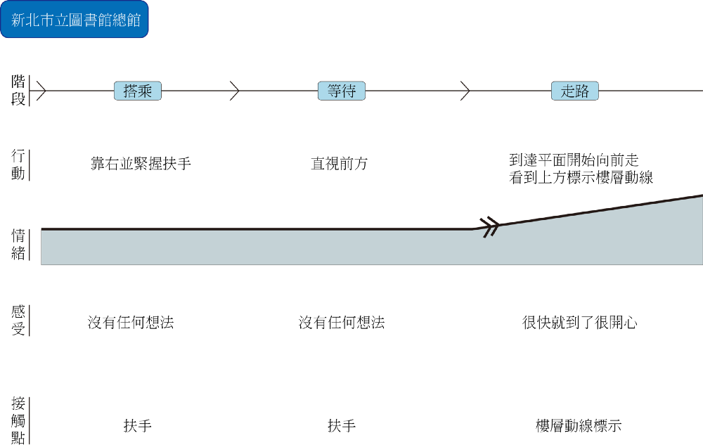 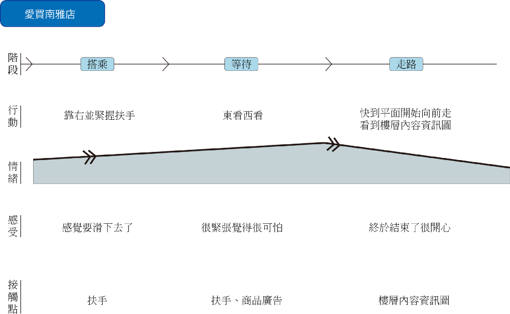 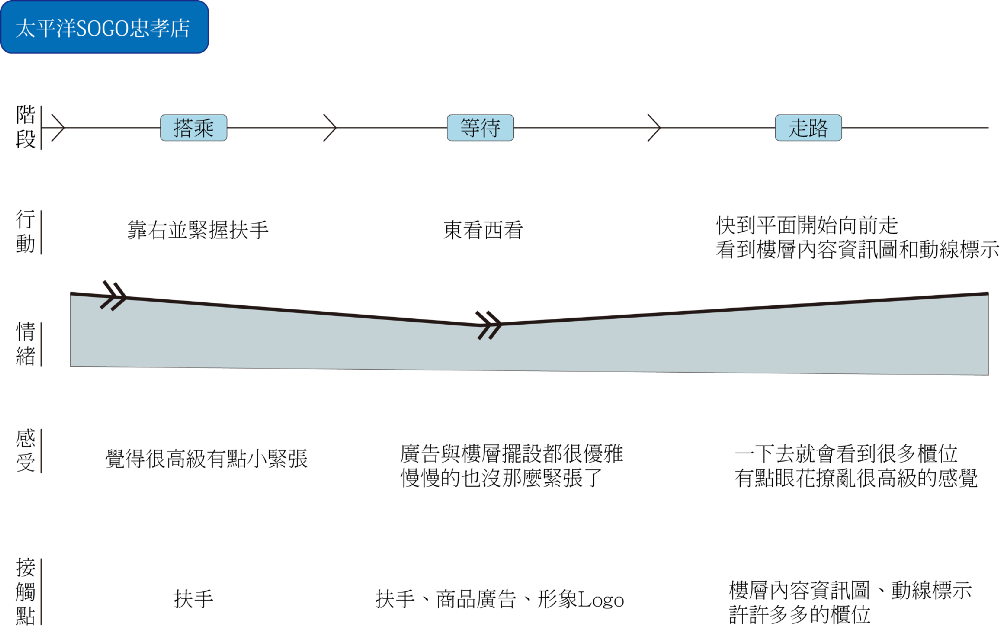 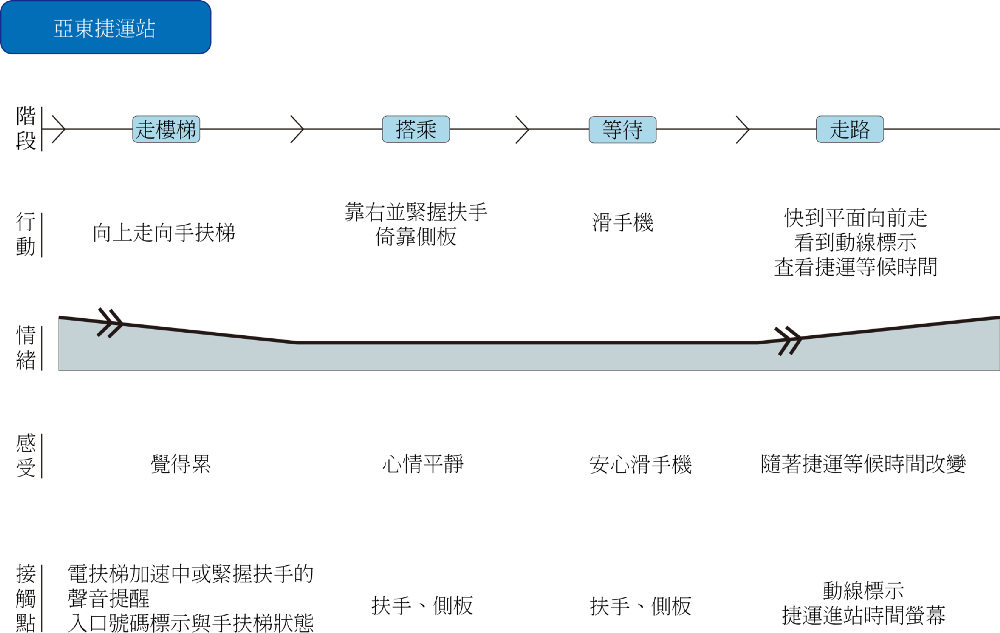电梯
 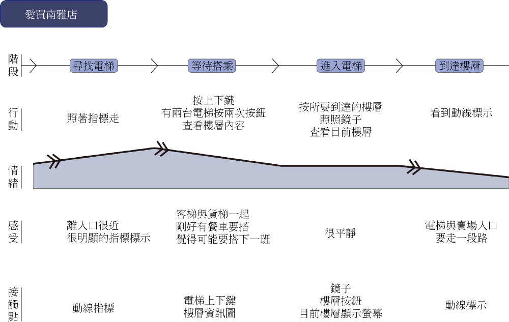
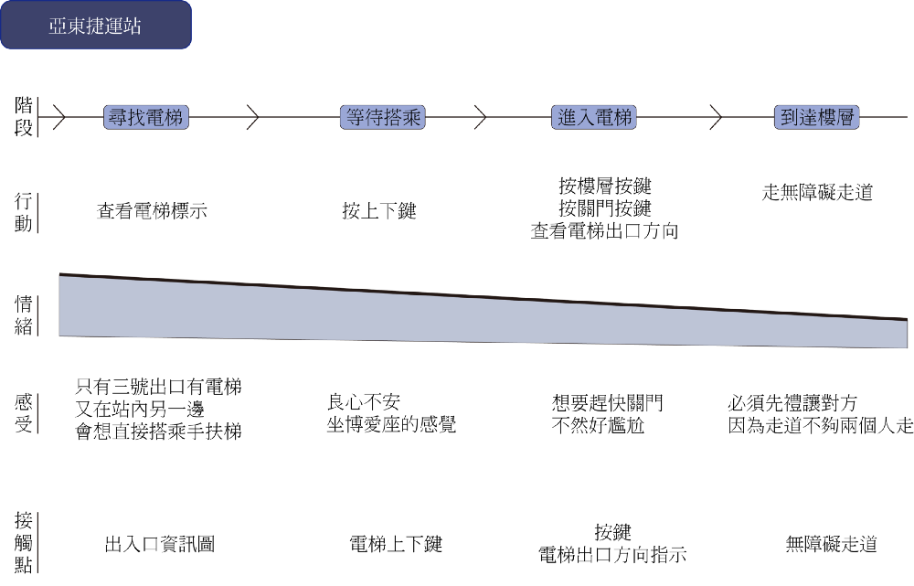
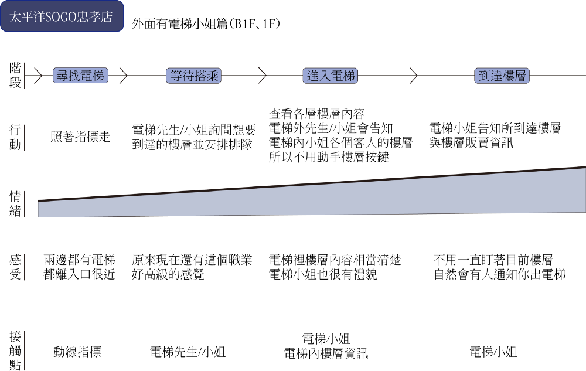
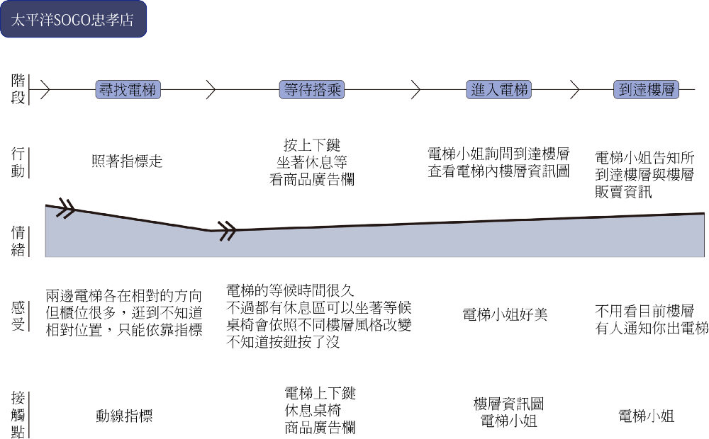
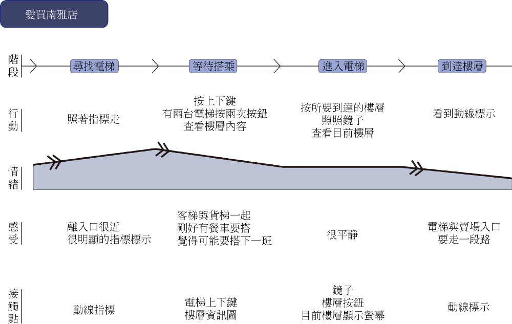
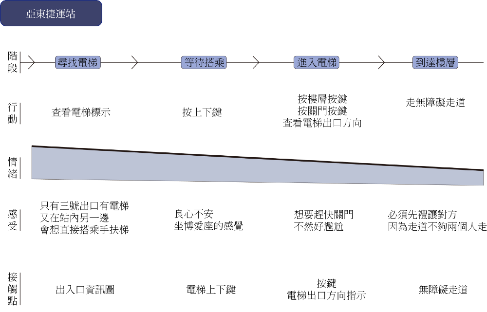
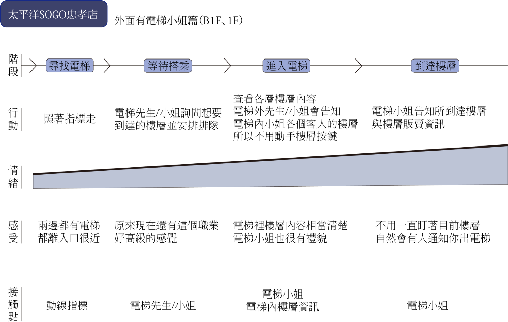
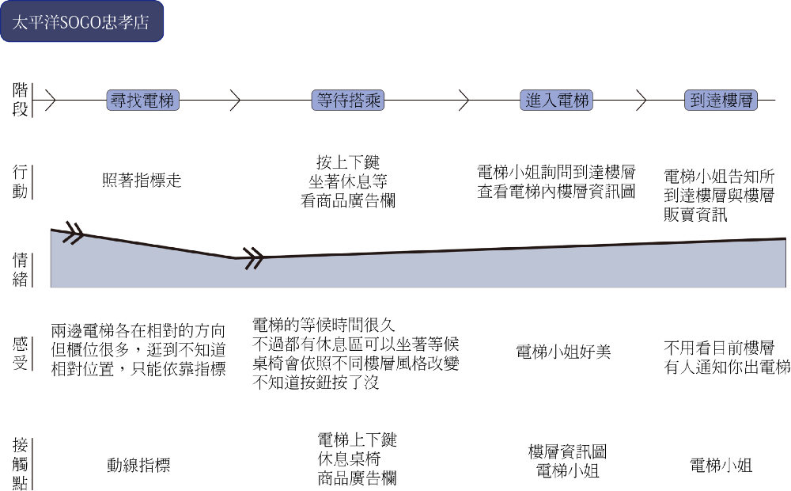
Scenario Analysis:AEIOS
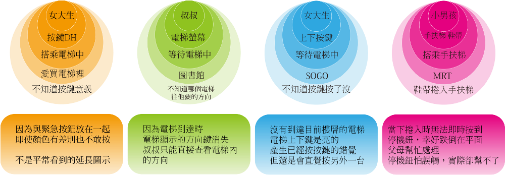
起先是对学校宿舍电梯的排程很有兴趣，但因为主题太过狭隘，改为对于公众场所的手扶梯与电梯来做研究．主要以图书馆、量贩店、百货公司、捷运站，这四个不同领域为主，其一原因为地理位置相当近（除了SOGO）、其二为了显示装置对于店家类型不同有何改变，而为什么会选择SOGO而不选择相对近的板桥大远百？因为老师似乎对于SOGO这个场域很喜欢，且忠孝店有电梯小姐/先生这件事实在太让我惊艳了．
首先，我先到了各个场域观察人们的使用习惯，以及各个不同场域的手扶梯与电梯有何差别，每个各观察30分钟左右，再自己亲自到每一层楼体验每个手扶梯与电梯．我选择了假日晚上去探查，因为我认为人比较多，我的时间上也比较方便．不过其实来来回回我去过了这些场域很多次了，每次回家都发现自己没有好好细看的地方，所以我认为去探查前实在需要准备一些基本资料与要查看的项目，才不会走了那么多冤枉路．
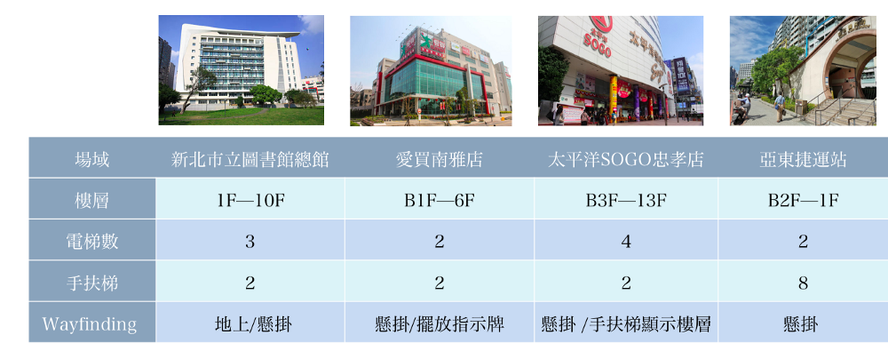
捷运站部分手扶梯总共有八个（一号往下、二号往上、三号上下都有、站内有四个），我猜测三号出口有那么电扶梯还有手扶梯，是因为三号出口一上去隔壁就有亚东医院，所以为了更方便看医生的老人家或行动不便者，使用该出口进出的人数也很多，因为再过去也是往图书馆与爱买的方向．
图书馆内的手扶梯较为窄小，无法两人并排搭乘，馆内只提供一到四层，显示只是为了人们方便，但是可有可无的存在，搭乘的人也不多，大部分都已搭乘电梯为主．爱买与SOGO内手扶梯多楼层提示，手扶梯因较为靠近，所以之间都会有小心头手的警示，但SOGO的警示就较优美为主，警示语也较小．爱买电扶梯为了要方便手推车上去则使用平坦型的电扶梯．捷运站内手扶梯明显比其他场域多很多警示，不管是加速怠速，也会有语音的提示，这很有可能跟扯头皮事件有关，希望防范更多人注意要紧握扶手、站稳踏阶．
其电梯设计成全透明的样式，主要是为了要增加及时回馈，缩减心理等待的时间，但我认为其实效果还好，倒是很显示出高科技感．而因为全透明的关系，所以在电梯内上面加装了后照镜，为了方便轮椅使用者可观看电梯出口，达到无障碍电梯的功能。（在此，再次呼吁电梯里面的镜子除了可以整衣敛容，主要是为了让轮椅使用者能够看到出口，方便出入）
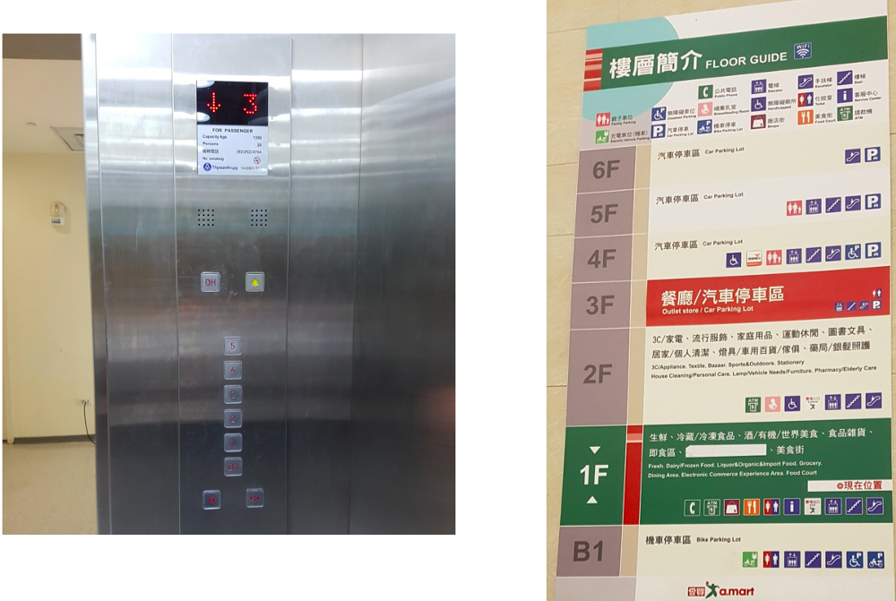
爱买内电梯为一个长方形空间，方便推车可以进去，不过当时去搭乘的时候刚好有餐车和消费者一起排队，可能客梯与货梯是一起的．而电梯有一个DH 按钮，起初我实在不知道这个按钮的功能，后来打过去客服询问，才知道他延长关门的按钮，实在是因为他与紧急按钮放在一起，但是又与楼层按钮颜色相同，成功达到想按又不敢乱按的效果，我猜测有可能是为了要避免消费者按到，但又为了要让员工搭乘时方便而设计成不是平常看到的图示．
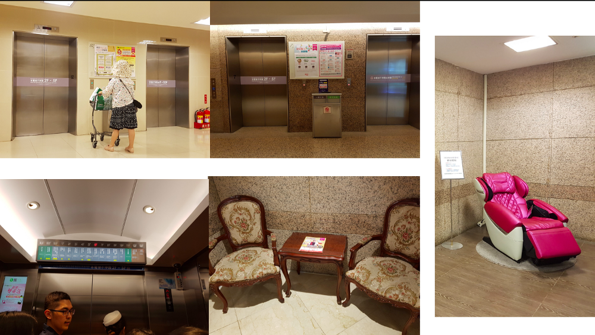
SOGO每一层楼两侧都有电梯，但是电梯样式不太一样，可能是电梯汰换的时候只有将老旧电梯汰换，按钮部分为触碰感应（按不下去），以楼层分流电梯，如果没有到达的电梯按钮就会一直亮着．在电梯间都有放置垃圾桶，且在6楼以上电梯附近都有摆放椅子，每一层楼的样式随着该层楼贩售主题而改变，像是8、9楼属家居产品范畴，所以就有电动按摩椅，实在是很舒服，我在上面坐了很久观察了很多人，而在电梯附近也会摆放DM或是活动宣传海报．有趣的是在1楼与B1楼层都有电梯小姐们（我只看到一位电梯先生）会询问你要到达的楼层，指引你到所属的队伍排队，电梯里面也有电梯小姐，他们会依照外面小姐的只是按楼层，每到一个楼层就会告知该楼层贩卖的商品，提醒电梯内的顾客已到达，实在很贴心（我根本不用碰到按纽）电梯内楼层指示灯也会随着你目前的楼层改变，很有即时呼应的感觉．
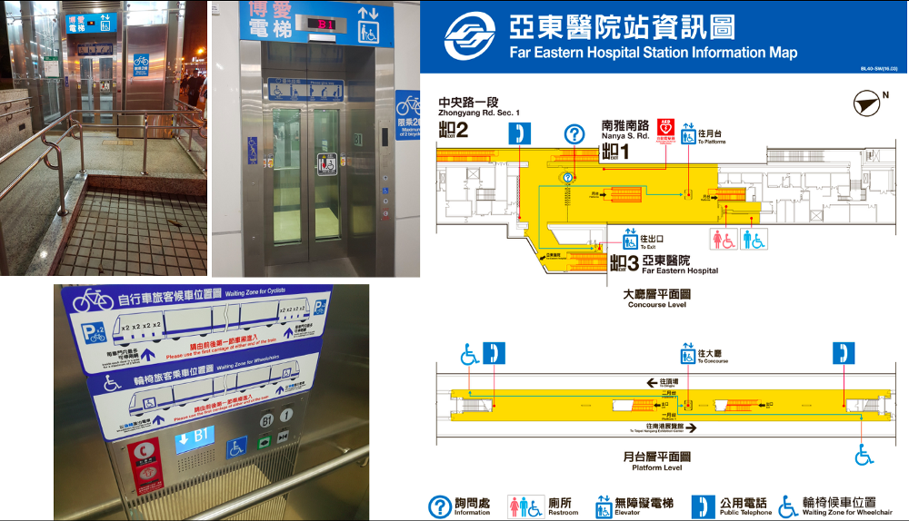
首先，先原谅我忘记拍无障碍走道，只好拿其他捷运站的照片补充，还有我只有观察站外的电梯，而没有进入站内．（当时天色昏暗，我真的很想回家吃饭）．电梯内有标示哪些车厢可供脚踏车与轮椅使用者进入，而电梯外面贴了很多礼让可优先使用者，而出电梯外都有无障碍走道，是因为几乎每一个捷运站外与地面都有高低落差（相同道理，所以搭乘手扶梯前一定会先走楼梯上去）不过为了省人行道空间，无障碍走到无法达到可以并排的宽度，所以一出电梯会有一小块空间，给你礼让对面正要上去搭乘电梯的人．
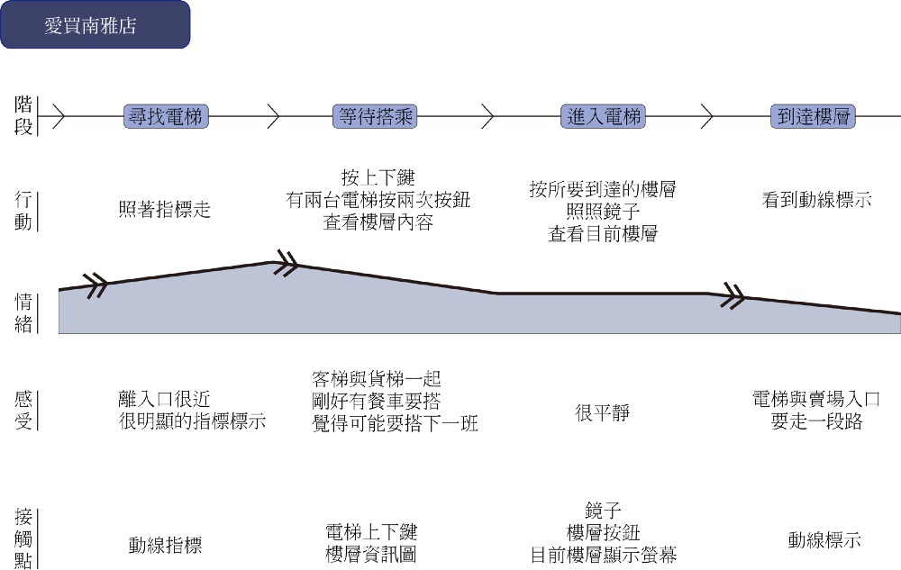
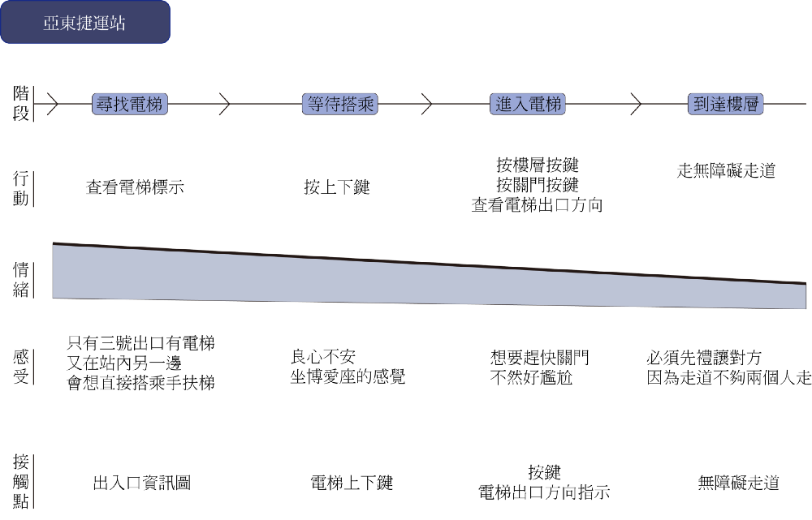
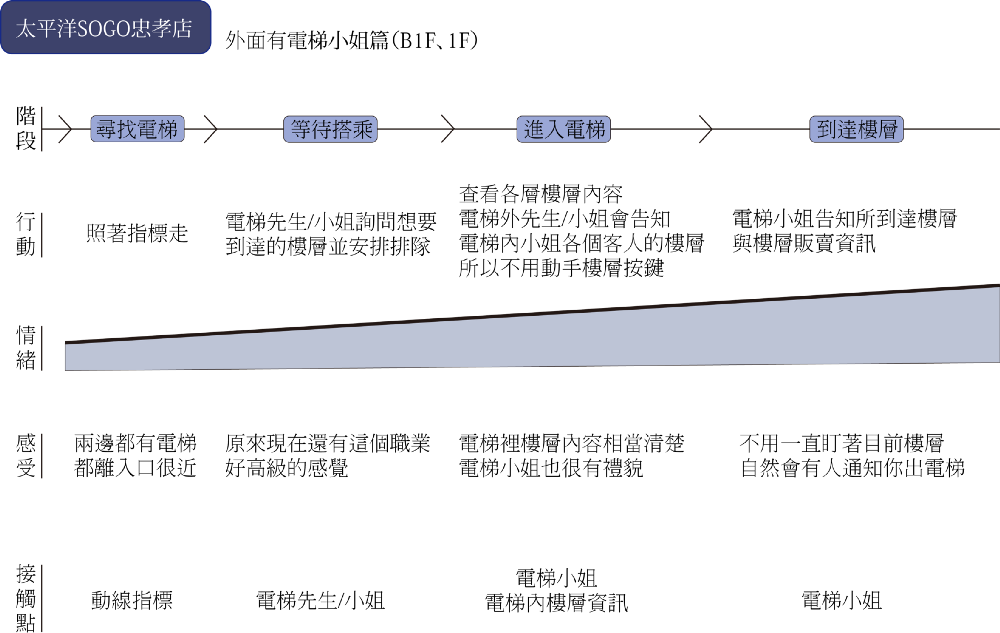
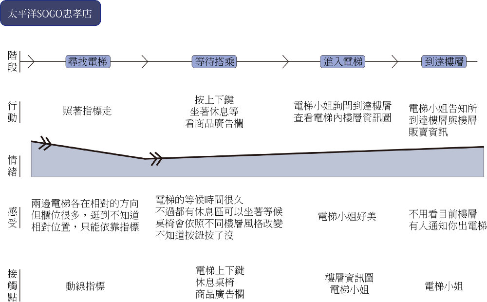